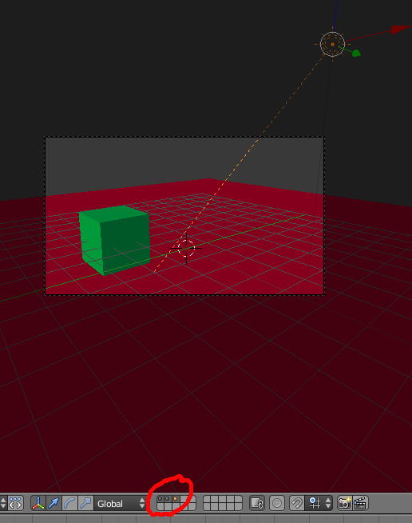

Render Layers
1- Utilize a cena pré-definida para criar a seguinte configuração:

Um cubo verde na layer 1
Um plano vermelho na layer 2
Uma lâmpada Sun na layer 3
2- No painel Render, crie duas Render Layers, uma com o nome verde e outra com o nome vermelho.
Na Render Layer “verde”, coloque visíveis as 3 Layers em que tem objectos (primeiro conjunto de 20 caixas, lado esquedo) mas só active a primeira, onde está o cubo, e a terceira, onde está a luz (segundo conjunto de 20 caixas, lado direito).
Na Render Layer “vermelha”, coloque visíveis as 3 Layers em que tem objectos (primeiro conjunto de 20 caixas, lado esquedo) mas só active a segunda, onde está o plano, e a terceira, onde está a luz (segundo conjunto de 20 caixas, lado direito).
Ou seja, estamos a criar 2 Render Layers. Numa vai surgir o cubo iluminado, na outra surge o plano iluminado e com a sombra do cubo.

3- Active a janela Node Editor. Clique para activar os Compositing Nodes, Use Nodes e Backdrop. Clique em F12 para criar um render. Depois faça ESC para voltar à janela Node Editor.
4- Na sua janela deverá ter 2 nós: Render Layers (input) e o Composite (output).
Aceda ao menu “Add”, escolha a opção “Input” e adicione um nó “Render Layers”. Num “Render Layers” escolha a layer “verde” e na outra “vermelho”.
Aceda ao menu “Add”, escolha a opção “Color” e adicione um nó “AlphaOver”.
Aceda ao menu “Add”, escolha a opção “Output” e adicione um nó “Viewer”. Na imagem abaixo estamos a utilizar 3 nós de tipo “Viewer”, pode repetir o processo ou seleccionar o “Viewer” adicionado e duplicar (SHIFT+D).
Configure a ligações entre os nós de acordo com o layout abaixo.

5- Pode introduzir outros nós, experimentando novos efeitos.